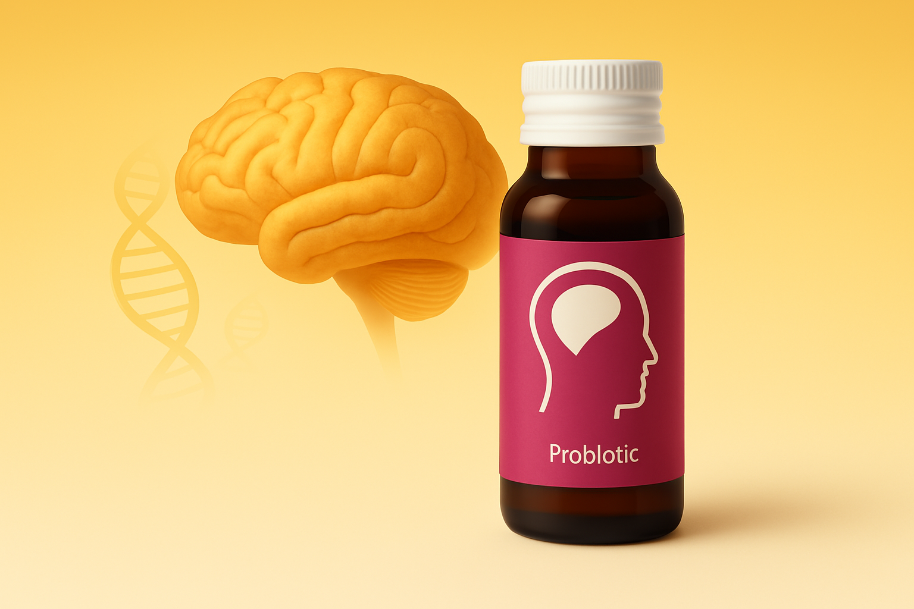

i-Brain® 腦健寶 is an advanced Probiotic Nutritional Drink (益生營養液飲料) that supports brain function and mental performance. Featuring neuro-supportive probiotics and targeted nutrients, it promotes focus, cognitive resilience, and healthy aging via the gut–brain axis.
Each ingredient in i-Slim® is selected for its synergistic role in metabolic regulation:
Proudly Made in Hong Kong, each formulation blends science with nature to support your body’s vital systems.
Proudly Made in Hong Kong — Powered by Science, Rooted in Care
Source: 1. The Role of Lactobacillus plantarum in Reducing Obesity and Inflammation: A Meta-Analysis
Enhances fat breakdown and reduces storage by increasing SCFA production and inhibiting fatty acid synthase (FAS).
Promotes microbiota balance, reduces inflammation, and strengthens intestinal barrier function.
Stimulates GLP-1 and improves leptin sensitivity for better satiety and reduced cravings.
Fortifies your diet with science-backed nutrients like Vitamin D3 and K1, often lacking in everyday meals.
Each benefit is supported by peer-reviewed clinical trials and modern nutritional research.
| 项目 / Item | 每份 / Per (30 ml) | 营养素参考值% / NRV% |
|---|---|---|
| 热量 / Calories | 35 kcal | 2% |
| 蛋白质 / Protein | 2 g | 4% |
| 脂肪 / Total Fat | 2 g | 3% |
| 碳水化合物 / Carbohydrate | 4 g | 1% |
| 膳食纤维 / Dietary Fiber | 4 g | 14% |
| 糖 / Sugars | 1 g | 2% |
| 维生素 D3 / Vitamin D3 | 50 µg (2000 IU) | 250% |
| 维生素 K2（MK-7）/ Vitamin K2 (as MK-7) | 75 µg | 63% |
| 益生菌添加量 / Probiotic | ≥ 7.5 × 108 CFU | — （无 NRV 标准 / No NRV established） |
* 数值基于每份 30 ml；NRV% 可能因地区法规略有差异。